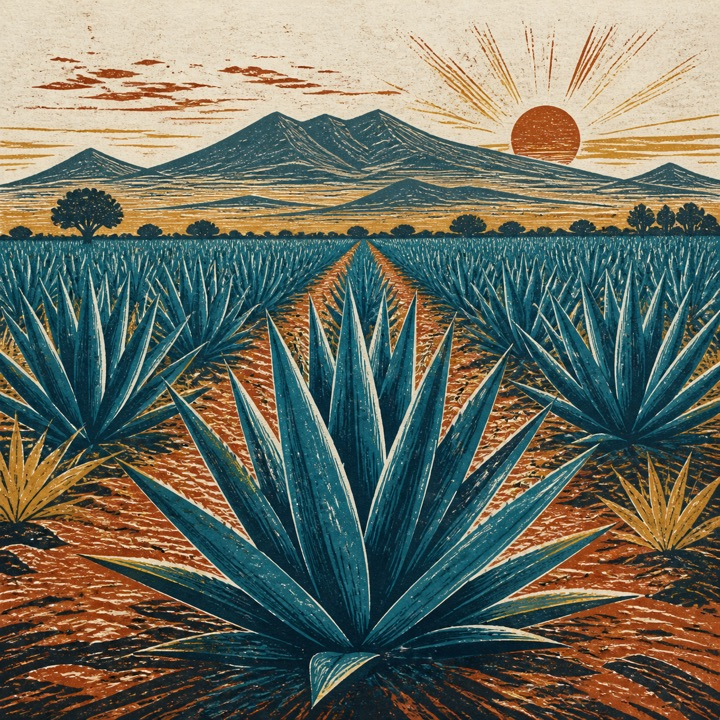
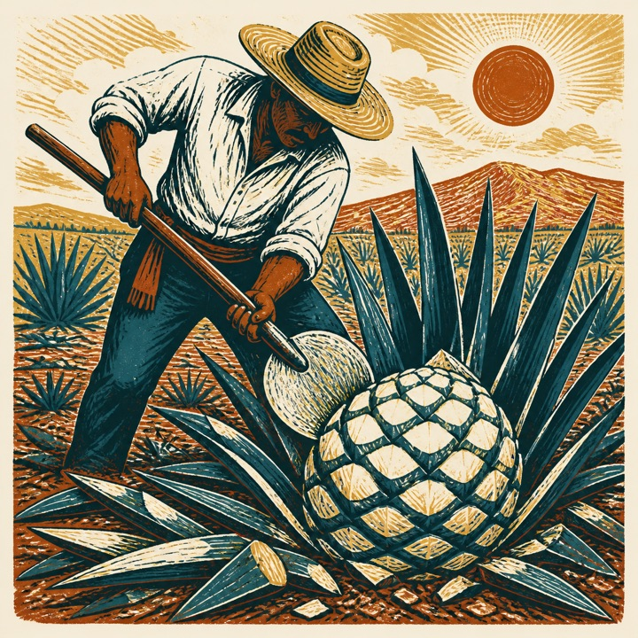
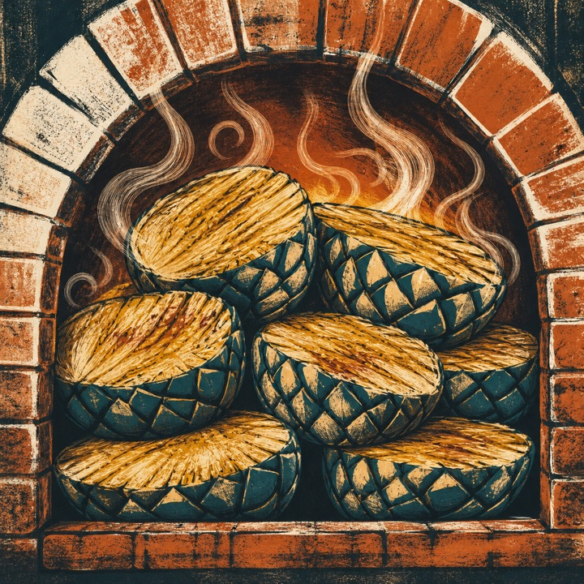
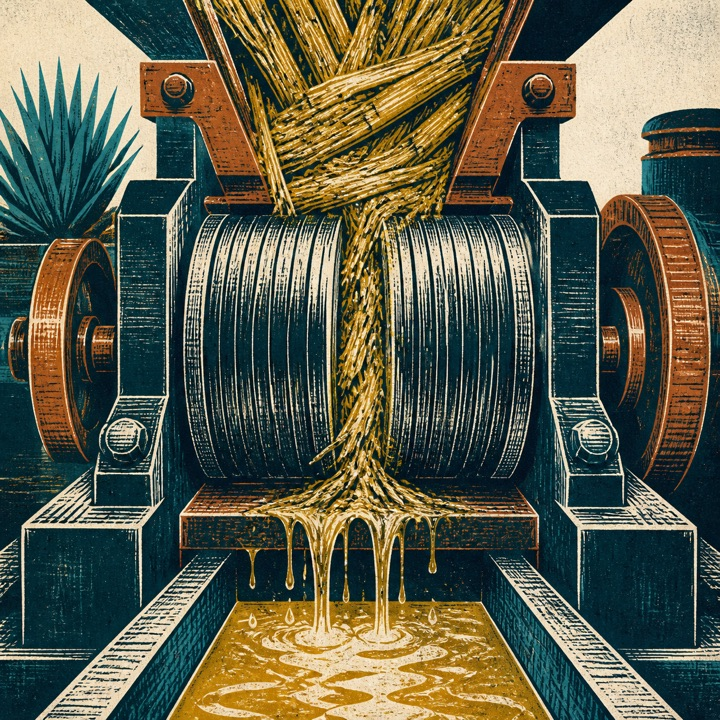
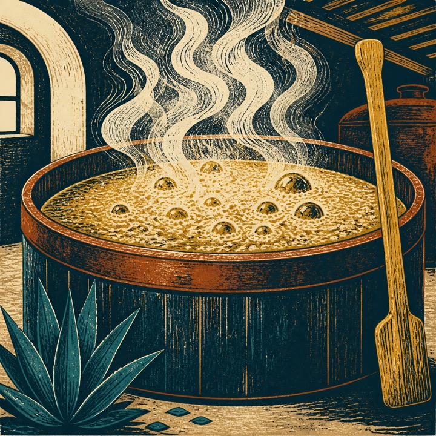
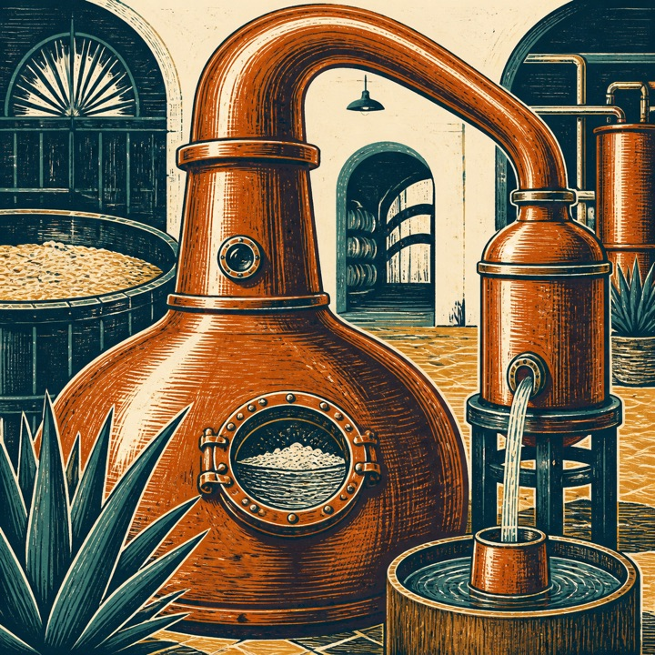
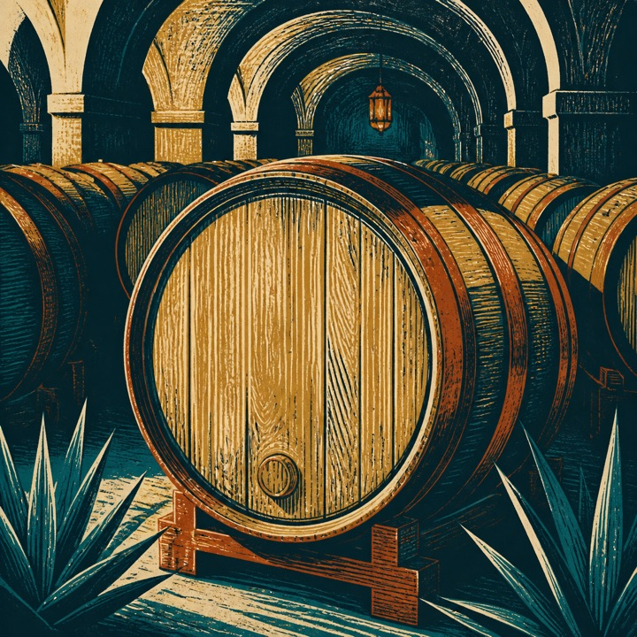
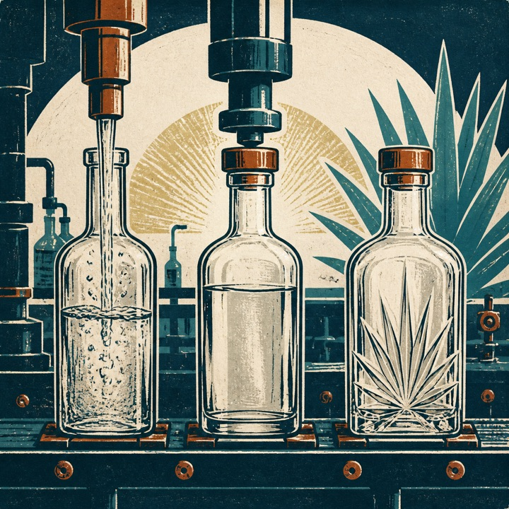

Tequila 100% Agave
All sugars come from Agave tequilana Weber blue variety, and the tequila is bottled at origin.
Every class starts with blue agave, cooking, fermentation, and distillation. Time, wood, and blending define what happens after the still.
The direct expression: tequila from the still, adjusted to its bottling strength with water. It makes the cooked agave and distillation choices easiest to read.
A bridge between fresh and matured tequila. Officially, it is blanco blended with reposado, añejo, or extra añejo tequila.
“Rested” tequila. A short stay in wood begins to round the spirit and add color while keeping the agave character in view.
A longer conversation with wood. Smaller barrels and a full year or more of maturation deepen color and bring oak-derived aromas forward.
The longest-matured official class. Three years or more in barrel builds a darker, more wood-led expression while the tequila remains rooted in blue agave.
Relative tendencies, not quality scores. 5 means more prominent.
Class pairings are editorial; the IBA recipes linked below define cocktails, not a required tequila class.
Blanco is the only class defined as direct from the still with no required wood maturation or blending with an aged class.
The production path is shared until maturation. Select a tequila above to see how the final stage changes.

Agave tequilana Weber blue variety grows in an authorized Denomination of Origin region.

At the right stage of development, jimadores cut away the leaves and harvest the agave heart, or piña.

Hydrolysis or cooking converts agave inulin into fermentable sugars.

Shredders or roller mills separate the sugars in the cooked piña from its fiber.

Yeast transforms sugars in the must into alcohol and creates compounds that shape aroma and flavor.

The fermented must is boiled and condensed, generally in two phases. Blanco emerges after this stage.

No wood maturation is required. After distillation, blanco is adjusted to bottling strength with water.

The finished class is filtered, bottled, labeled, and assigned to a production lot.
Blanco, Joven, Reposado, Añejo, and Extra añejo are classes: they describe what happens after distillation. The category tells you where the fermentable sugars came from.
Official CRT figures for the full 2024 industry. These totals combine all classes and are shown as market context—not as a claim about one tab.